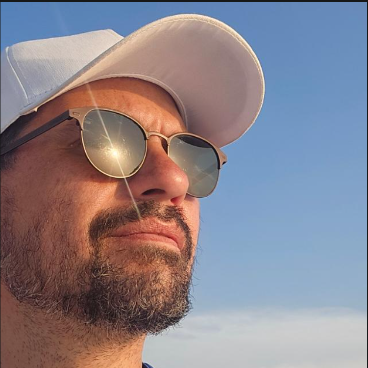

Livros
- Designing Data-Intensive Applications
- The Staff Engineer's Path
- Team Topologies
Seu Nome · Cargo atual. Aqui está onde estou hoje, onde quero chegar até dezembro e o que vou fazer a cada trimestre para chegar lá.

Autoavaliação de 0 a 100 em cada competência. A barra azul é o nível atual, a listrada é a meta do ano e o traço marca o ponto de chegada.
Cada meta tem um resultado que dá para medir. Clique para ver o plano completo.
Cada etapa termina com uma conversa de revisão e um ajuste de rota.
Diagnóstico de competências e início da mentoria.
Desenho do novo serviço e curso de arquitetura.
Colocar o serviço em produção e apresentar em inglês.
Avaliação final e proposta de promoção.
Recursos escolhidos para fechar as lacunas das competências acima.